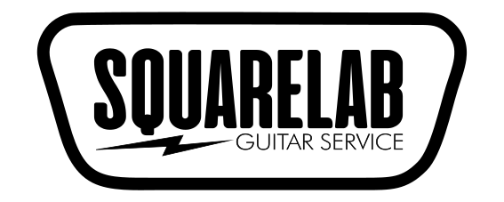

Ajustes de precisión, calibración profesional, electrónica personalizada y restauración para guitarras y bajos.
Agendar CitaAjuste de alma, altura de cuerdas, entonación, radio de pastillas y limpieza profunda de diapasones.
Cableado custom, reemplazo de pickups, potenciómetros, switches, apantallado de cobre y diagnóstico de ruidos.
Rectificado de trastes, coronado, pulido y fabricación/ajuste de cejuelas a medida.
Restauración de hardware, ajuste de puentes fijos o flotantes, reemplazo de clavijeros y acabados.